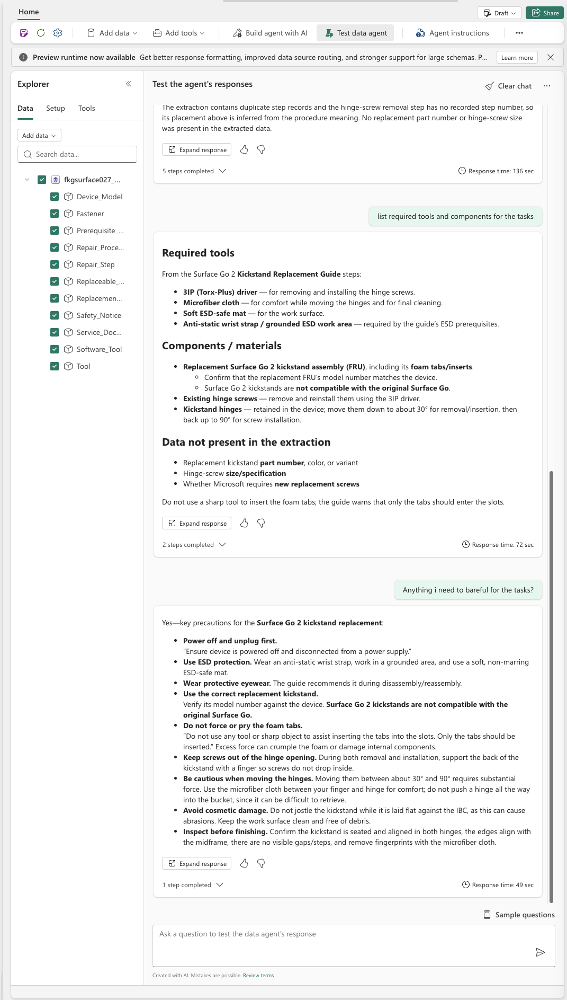

From your corpus.
Grounded in evidence.
Build a domain-fit knowledge graph for Microsoft Fabric. Discover, design, and evaluate first. Extract and publish only with explicit approval.
Drive the fabric-kg Python CLI directly or with GitHub Copilot CLI. Keep your source evidence traceable from extraction to a sealed serving graph.
0.2.7 · Development version
Native Hierarchical Leiden is now opt-in. Not a PyPI release.
Design before extraction. Evidence before serving.
A domain-agnostic workflow shaped by your documents and questions—not a fixed set of entity types.
Discover & design
Gather reusable corpus observations. Propose a schema, evaluate question gaps, and explicitly approve the design.
Extract & validate
L2 captures entities and relationships. L3 validates their evidence before compilation into a sealed L4 serving projection.
Derive or publish
Optionally derive communities locally. Review a separate plan before publishing a create-only Fabric prototype.
The default Fabric path
Lakehouse + Ontology → ontology-only Data Agent. The publisher does not create a standalone GraphModel; Fabric still manages the Ontology companion graph. The Agent uses Ontology v1 as its sole structured source, not Lakehouse SQL. Azure AI Search is separate and is not automatically attached.
What's new in 0.2.7
Full changelogMore faithful extraction, fewer avoidable publication failures, and a new way to organize the graph you already have.
- Native Hierarchical Leiden
- Opt-in derivation from sealed L4, with immutable output and its own receipt. Optional Ontology grouping and offline v2 TMDL conversion keep default publication on v1.
- Relationship fidelity
- The serialized direction/context witness 1.3.0 fails closed with historical compatibility. Cross-leaf endpoints and duplicate local IDs are explicitly rejected.
- Better extraction context
- Bounded ancestor headings inform default extraction; cached layout headings carry across pages. Heading context guides interpretation—it is not evidence. Historical re-extraction, donor continuation, and discovery reuse do not receive the new headings.
- Reliable reuse & identity
- Discovery resume no longer uses stale prepared cache. Corrected re-extraction fragment keys preserve the same semantic entity with different approved types per leaf, rather than last-wins loss.
- Schema & property handling
- A configurable relationship-type range retains the 8–20 default with compiler capacity support. Publication safely maps native dates and deterministically coalesces scoped property variants. An opt-in, evidence-grounded label fallback handles missing required non-key strings—not missing keys.
Group existing facts.
Keep their evidence intact.
Native Hierarchical LeidenPartition a sorted, undirected projection of your sealed graph. Preserve the original directed, typed relationships, IDs, and evidence. No remote calls. No mutation of approved inputs.
A reproducible local derivation
This example needs a pre-existing sealed L4 at .fkg/l4/approved-run and validated manifests under .fkg/l3. Replace these illustrative paths with your artifacts and use a new output directory.
fabric-kg derive-hierarchy \
--source .fkg/l4/approved-run \
--input-manifest-search-root .fkg/l3 \
--out .fkg/derived-hierarchy/communities-1 \
--run-id hier-run-1 --policy-id default \
--seed 3735928559 --max-cluster-size 10The result is a separately receipted, immutable three-Parquet derived artifact, not a replacement for sealed L4.
Structure you can inspect
- All connected components are covered; isolates form singleton communities.
- Duplicate IDs and unknown endpoints are rejected.
- Exactly-once terminal membership and deterministic community identity are validated.
- SHA256 binds graph, evidence, configuration, and seed; ancestors retain evidence.
Organization, not new knowledge. It does not recover missing relationships, discover procedural order, or prove semantic inheritance or better answers. A/B quality evaluation is deferred.
Is max-cluster-size a hard limit?
No. It is a split trigger. Oversized terminal communities are retained and flagged. A COMPLETE result means structural validity, not semantic utility.
What if native Leiden cannot run?
The optional extra pins graspologic-native==1.2.5, supported here on Python 3.10–3.13, not 3.14. Results explicitly distinguish empty, insufficient, native_unavailable, and failed states. There is no fallback algorithm.
Does community grouping assert inheritance?
No. Opt-in --ontology-inheritance projects communities as abstract group_<dominant type> bases for display grouping. These are not assertions of true “is-a” meaning.
A real Data Agent example
An ontology explorer alongside a conversation about Surface Go 2 kickstand servicing.
This user-supplied screenshot shows Fabric Data Agent answers about tools, components, and precautions. It illustrates a document-grounded use case, not a benchmark or proof that Hierarchical Leiden improves answer quality.
Verify the source service guide before performing any repair. The example is not authoritative repair guidance.
View full screenshot

Start locally. Add cloud services when needed.
Install 0.2.7 from the new public source repository. The project requires Python 3.10+; choose Python 3.10–3.13 for the optional native Leiden provider.
git clone https://github.com/hyssh/fabric-kg-builder.git
cd fabric-kg-builder
python -m venv .venv
source .venv/bin/activate
python -m pip install -e '.[leiden]'
fabric-kg --versionOnly the prerequisites you need
Without native Leiden, install with python -m pip install -e .. On Windows, activate with .venv\Scripts\Activate.ps1 in PowerShell.
Local hierarchy and offline conversion need artifacts, not Azure credentials or a .env. OCR and enrichment need configured services, authentication, and explicit budget/approval. Use .env.example for guidance and keep secrets uncommitted.
Inspect the workflow before running it
fabric-kg domain discover --help
fabric-kg domain design --help
fabric-kg enrich --help
fabric-kg validate-evidence --help
fabric-kg project-serving --help
fabric-kg app publish-structured --help
fabric-kg app publish-prototype-agent --help
fabric-kg app convert-ontology-v2 --helpPublication is a separate decision
Use an authorized Fabric workspace and review the default dry-run plan. Live publication requires explicit approval of its exact plan hash through --approve-live. This is a create-only, nontransactional prototype: partial resources are retained and there is no automatic rollback. Creating a draft Agent does not complete answer-quality evaluation; general transactional production deployment is not verified.
The ontology-only v1 Agent receives GQL instructions using FILTER rather than WHERE, entity/relationship type label names, backtick-quoted label, and explicit guidance against unsupported facts.
convert-ontology-v2 converts emitted parts to TMDL offline, preserving inheritance and bindings. It is not full default v2 deployment or v2 Data Agent support.
Your CLI workflow,
guided by Copilot.
The customer-facing plugin helps GitHub Copilot CLI drive the installed fabric-kg tool. The Python CLI is installed separately.
Ask Copilot to discover a schema from your corpus, evaluate question gaps, and prepare a plan for review. Keep model spending, schema approval, extraction, and publication as distinct decisions.
Plugin guide & installation optionscopilot plugin marketplace add hyssh/fabric-kg-builder
copilot plugin install fabric-kg@fabric-kg-builderIn Copilot CLI, verify with /plugin list and /skills list. Use /agent to select kg-builder.
Review the facts. Test the answers.
Evidence validation is not a promise of complete extraction, injection immunity, or correct business answers. Inspect gaps and unsupported facts, then evaluate representative questions before relying on a deployed Agent.
For development, install python -m pip install -e '.[dev]' and run python -m pytest. The default suite excludes slow and integration tests.